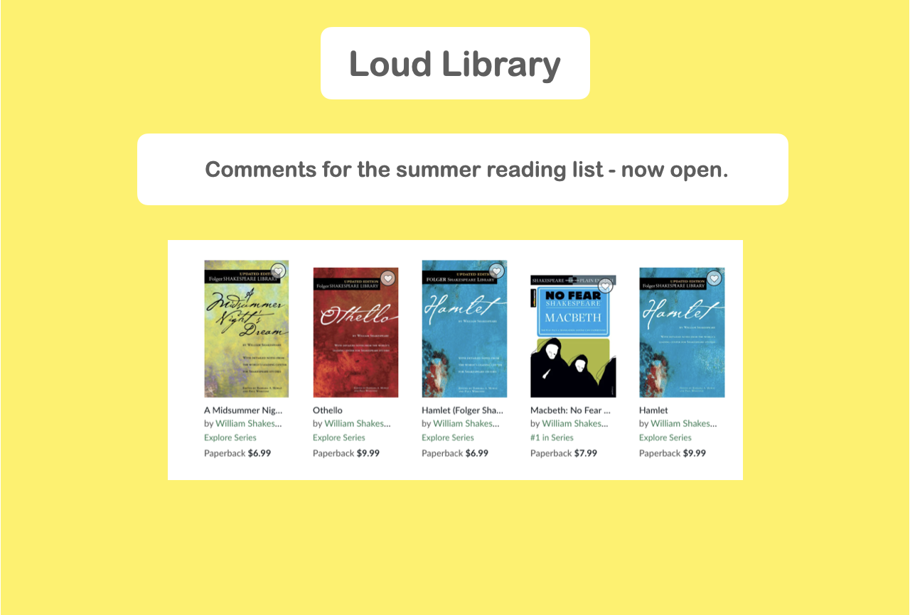
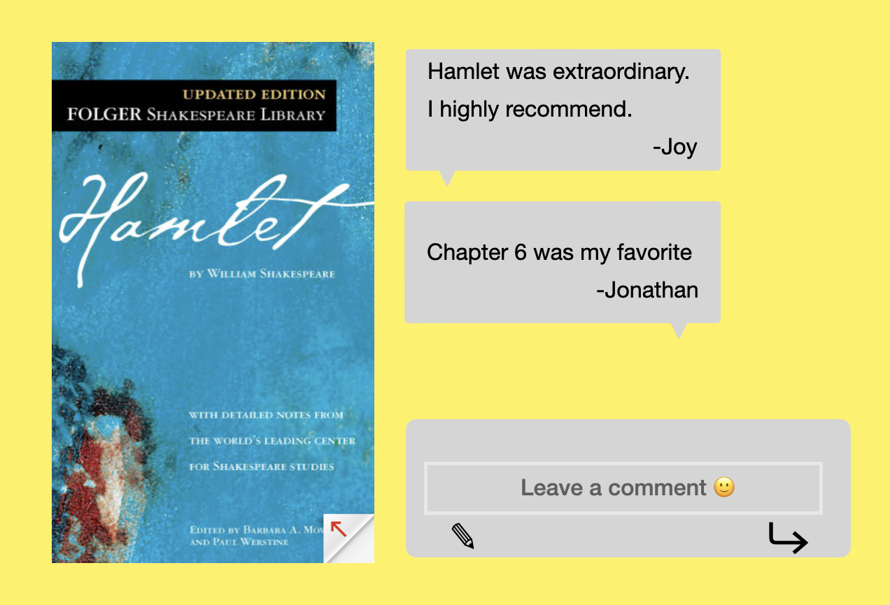

Checkpoint #1
- IDEA:Summer Reading List Review app
- USER STORY #1: "As a user I want to share my thoughts and recommend summer book reads to encourage other users and share my POV."
- USER STORY #2: "As an author, I want to see real-life reviews by fans about my book."
- ACCEPTANCE CRITERIA #1: "Static book information will be pulled into the app from an external website using an API."
- ACCEPTANCE CRITERIA #2: "When a user submits a review in the comments section, user text will be generated and upload on the website for public view."
- FRAMEWORKS: Bulma; GitHub APIs; Airtable
MOCKUP 1

MOCKUP 2
